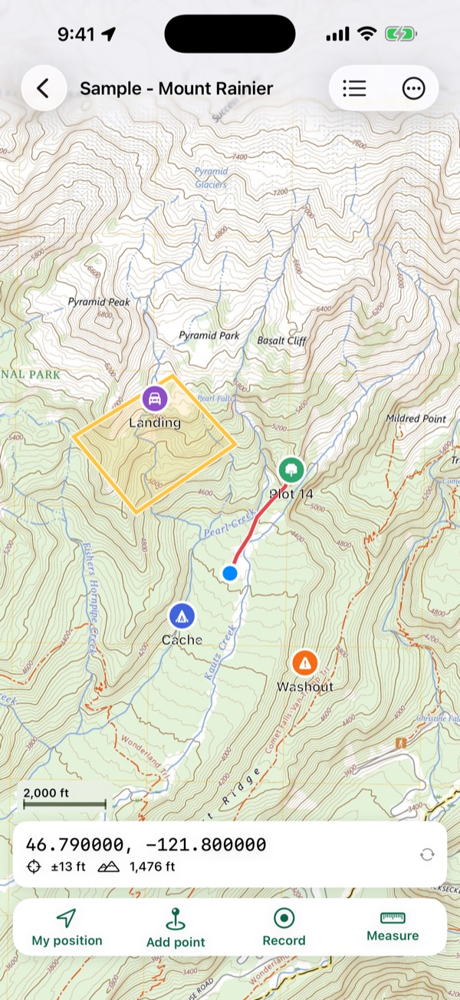
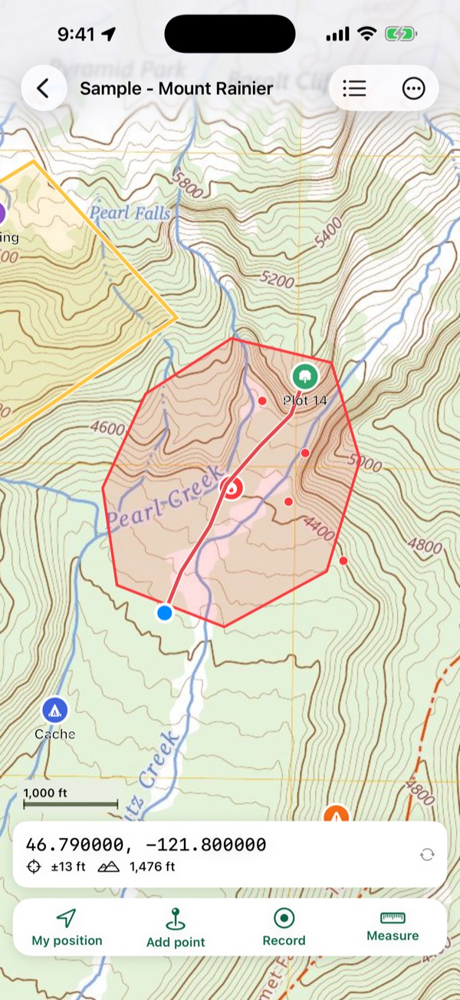
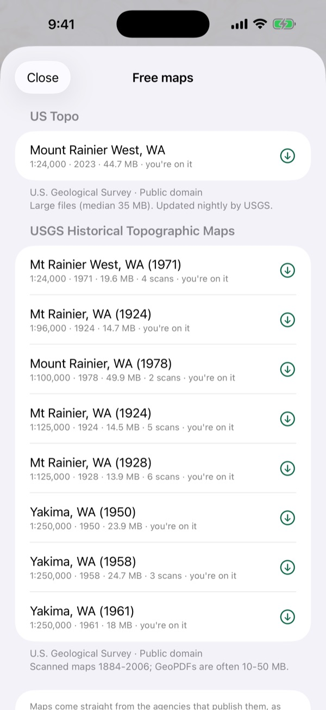
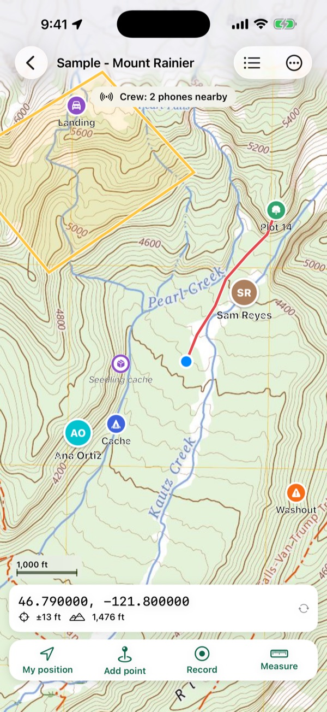

Your own maps, offline, with you on them.
Open a geospatial PDF or GeoTIFF (a cutblock map, a fire map, a USGS or NRCan topo, a map made in ArcGIS or QGIS) and Mapsheet shows where you are on it, with no signal. Drop points with photos, record tracks, measure areas, and send maps to your whole crew at once.

What Mapsheet does
Your maps, from anywhere
Geospatial PDFs from ArcGIS, QGIS, Global Mapper, the USGS and NRCan, including GeoPDF® files, multi-page atlases and rotated pages. GeoTIFFs, and TIFFs zipped with their world file. What makes a PDF geospatial.
You on the map
Your position, its accuracy and your heading, in airplane mode. A Bluetooth GNSS receiver that provides location to iOS works too. The map list shows which of your maps you're standing on.
Points, tracks and areas
Points with symbols, colours, notes, photos and your own fields (species, DBH, condition), which go out with CSV, KML and shapefiles. Tracks that keep recording with the phone locked, with the distance, time and a Stop button on the lock screen. Elevation profiles of tracks and lines from the ground model, with climb and steepest grade, offline. Lines and areas in metres, hectares, feet, miles or acres, and corners you can drag to fix in the field. Walk around a spot fire or a stand and turn the track into a measured area.
Walk to any point
Distance and bearing from you to a plot centre, a cache or a block corner. Go to any coordinate typed as decimal degrees, degrees and minutes, UTM or MGRS/USNG. Drop a point or start a track hands-free with Siri or the Action button. UTM and MGRS explained.
The coordinate systems crews use
UTM on every common datum, Canada's provincial systems (MTM, Quebec and Ontario Lambert, BC Albers, Alberta 10TM), Australia's MGA zones, and any projection a map defines itself.
Get your work out
GPX, KML, KMZ and CSV with UTM columns on every plan; shapefiles for ArcGIS and QGIS on Crew. Import GPX, KML, KMZ, CSV and zipped shapefiles onto any map.



Free maps, fires and crews
Today's fire maps from a QR code
Scan the QR code on an incident map, or paste a link, and Mapsheet lists the maps in the team's folder on the national fire file share. Pick the ones you need; watch the folder and Mapsheet tells you when new maps are posted. Direct PDF links and agencies' map lists work too.
Free maps near you
USGS US Topo and historical topos, Forest Service FSTopo maps, NRCan topo sheets, NSW and Queensland topos and LINZ Topo50, listed for where you are. Each downloads straight from its publisher. Where free topo maps come from.
Aerial and topo maps offline
Download aerial imagery or a topographic map of an area to keep on your phone: USGS imagery and topo for the US, LINZ aerial imagery for New Zealand. Use it like any map, with the source's credit shown.
Fire perimeters and hotspots offline
Current fire perimeters, incidents and NASA satellite hotspots on your maps, from NIFC, CWFIS, BC Wildfire, NSW RFS and Queensland feeds, saved for when you lose signal. Every fire shows its age and source; tap one for details. A US fire with maps on the NIFC File Share links straight to its incident's folder. Free on every plan.
Crew nearby, no internet
Phones in a crew see each other on the map and share points, lines, areas and tracks as they're made, over Wi-Fi and Bluetooth with no signal and no server. A crew lead starts it; anyone joins by scanning the lead's QR code or typing the code. Encrypted.
Export your map as a geospatial PDF
The map with your points, tracks and areas drawn on it, as a geospatial PDF that ArcGIS, QGIS, Avenza and Acrobat place on the earth, or to print. PDF maps stay sharp vector.
Back up and move your whole library
One file with every map and its points, tracks, areas and photos. Save it to Files or iCloud Drive and open it on a new iPhone or iPad to get everything back. And send maps as plain files (the original PDF plus a KML of your points) to crew members who don't use Mapsheet.
Ready for no signal
Before you head out, check a map's area: the map, ground heights, any aerial or topo, fire data and your position, each marked ready or not, and fixed in one tap. It also tells you if a downloaded area is missing tiles.
Offline mode
One switch and Mapsheet never touches the internet: for satellite and roaming data plans. Your maps, GPS, tools and crew sharing nearby all keep working.
Crew for your whole organization
Companies and agencies can buy Mapsheet Crew seats for their people through Apple Business Manager, and assign or take back seats as crews change.
These online extras are optional and only connect when you ask them to download something. Maps and imagery come from public agencies as they publish them; see the Terms of Use.
Built for crews
Crew packs Crew
A crew lead sends several maps, points, tracks and photos as one file by AirDrop, Messages or Mail. The crew opens it free (3 maps at a time on the free plan, every map with Field): points they already have are kept, new ones are added.
GPS averaging Crew
Average your position over 30 seconds for a plot centre or a corner, with the standard error shown. How accurate is phone GPS?
Shapefiles Crew
Points, lines and areas as zipped shapefiles with a .prj, ready for the GIS office.
For forestry and tree planting, wildland fire, survey, conservation and hunting: anyone who carries a map made for the job into places with no signal.
Plans
Free
3 maps at a time (a multi-page atlas counts as one; incident maps from the national fire file share don't count), with every field tool and GPX, KML and CSV export. Work use allowed.
Field
Unlimited maps, and exporting your map as a geospatial PDF. $59.99 a year with two weeks free, or $9.99 a month for seasonal work.
Crew
Everything in Field, plus crew packs, starting a crew nearby, GPS averaging and shapefile export, per person. $129.99 a year with two weeks free, or $19.99 a month.
Your maps never lock. If a plan ends you keep every map and everything on it; you just can't add maps past three. US prices; the App Store shows your local price. Cancel any time in your iPhone's Settings.
Guides for field maps
Plain answers for people who work with maps outdoors, each linked to its sources.
- What is a geospatial PDF?A geospatial PDF is a map PDF that stores its own coordinates. Learn the two encodings, how to check a file, and how ArcGIS Pro, QGIS and the USGS make them.
- Where can I download free topo maps as geospatial PDFs?Where to download free topographic maps for offline GPS use, from USGS US Topo, historical topos and topoBuilder to NRCan's legacy sheets and NSW topo maps.
- How do UTM and MGRS coordinates work?How UTM zones, eastings and northings, MGRS and US National Grid references and map datums work, with worked examples from USGS and FGDC sources.
- How accurate is phone GPS in the field?Phone GPS accuracy in open sky and under forest canopy, from GPS.gov and peer-reviewed field tests, and how waiting, averaging and external receivers help.
- How do I get a fire's incident maps onto my phone for use with no signal?Where US wildfire incident maps are posted, what the QR codes on printed maps open, and how to keep today's maps on your phone with no signal.
Questions and support
Which maps work in Mapsheet?
Geospatial PDFs (including GeoPDF® files) and GeoTIFFs, also inside a zip. A plain PDF without map coordinates can't show your position: export it from your GIS with georeferencing turned on.
Do I need a cell signal or Wi-Fi?
No. Your maps are stored on your iPhone or iPad, and GPS works anywhere with a view of the sky, in airplane mode too. You only need a connection to download a map.
Where do the free maps come from?
From the agencies that publish them: the U.S. Geological Survey, the USDA Forest Service, Natural Resources Canada, NSW Spatial Services, the Queensland Government and Land Information New Zealand. Mapsheet lists them; each map downloads straight from its publisher, as they publish it.
How many maps can Mapsheet handle?
We test on an iPad (9th generation), one of the slowest devices Mapsheet supports: with 1,000 maps, each with points, tracks and areas, the map list is on screen about 3 seconds after opening the app and a map opens in about 2 seconds. A full-size 49 MB USGS US Topo downloads and imports in about 12 seconds on Wi-Fi and opens in about 2. Maps are drawn from the PDF as you zoom, not converted to images, so big sheets keep their detail and storage stays close to the file's own size.
Can my crew see each other with no signal?
Yes: Crew nearby connects phones over Wi-Fi and Bluetooth, with no internet or server, so each person shows on everyone's map and shared points appear as they're made. A crew lead on Mapsheet Crew starts it; crew members on any plan join with the code.
Can my company buy Crew for the whole crew?
Yes. Organizations can buy Mapsheet Crew seats through Apple Business Manager and assign them to their people, or each person can subscribe in the app.
Can I use Mapsheet for work?
Yes, on every plan, including the free one. There's no separate professional licence.
Is Mapsheet free?
Yes, for up to 3 maps at a time with every field tool, and incident maps from the national fire file share never count toward the 3. Mapsheet Field ($59.99 a year or $9.99 a month in the US) adds unlimited maps; Mapsheet Crew ($129.99 a year or $19.99 a month per person) adds crew packs, GPS averaging and shapefile export. The yearly plans start with two weeks free.
What happens to my maps if my plan ends?
Nothing: you keep every map, point, track and photo. You just can't add maps past the free three until you subscribe again.
How do I get maps onto my phone?
Share the file to Mapsheet from Mail, Files, Drive or AirDrop, or tap + in the map list. A crew lead can send several maps at once as a crew pack.
Which devices does it run on?
iPhone and iPad with iOS 17 or later.
Is my data shared?
No. Maps, points, tracks, photos and your position stay on your device. There's no account and no server. See the privacy policy.
Still stuck? Write to laddothis at gmail dot com with what happened and your device. We answer within a day.